CPU-Z
CPU-Z permite obtener información detallada sobre el procesador, la placa base, la memoria RAM y otros parámetros del sistema. En este caso se utiliza para analizar la configuración real del equipo y detectar incluso un problema de rendimiento que afectaba directamente a la CPU.
Incidencia detectada
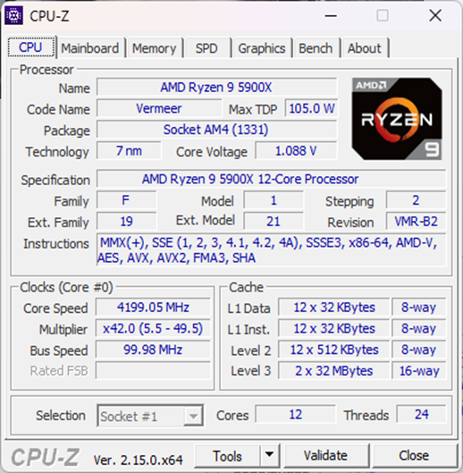
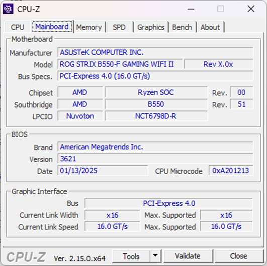
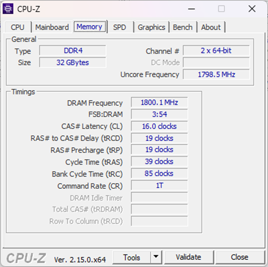
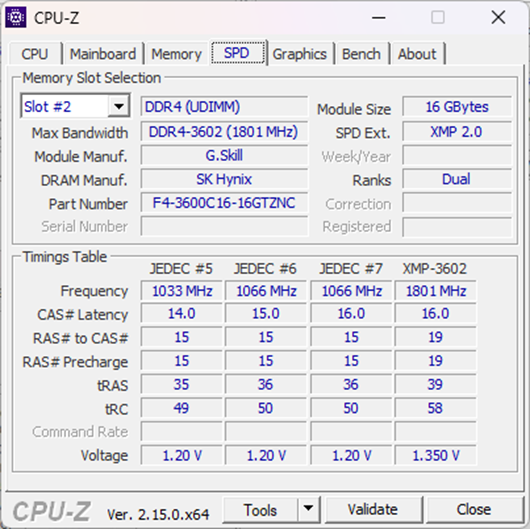
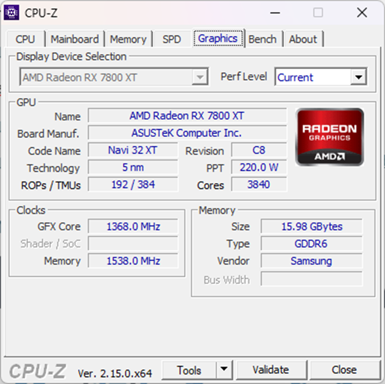
En estas capturas se muestran los componentes del ordenador elegido, en este caso el propio del autor. En primer lugar, la CPU es un AMD Ryzen 9 5900X. Antes de profundizar, y como ya se ha mencionado anteriormente, gracias a este trabajo, se comprobó que la CPU estaba rindiendo a la mitad de su potencial. La captura de abajo muestra los parámetros que tenía, reducidos a la mitad si lo comparamos con las capturas de arriba. Tras mucho investigar y probar, se logró solucionar entrando en msconfig, arranque, opciones avanzadas y desmarcando la opción de número de procesadores. Esto también tuvo un efecto considerable en los benchmarks, como se mostrará más abajo.
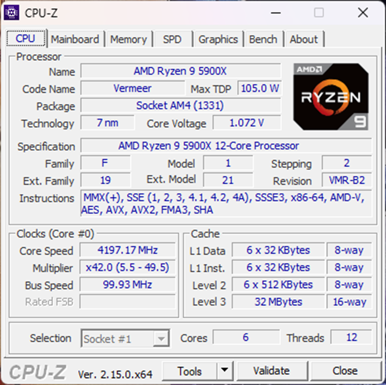
Continuando con la exposición, se ve que dispone de un socket AM4, con 12 núcleos y 24 hilos. En esta pantalla también se pueden ver las memorias de caché L1, L2 y L3 (64 MB en total), además de las velocidades del reloj y los voltajes que consume. En esa captura está funcionando el Precision Boost Overdrive (PBO), un pequeño overclock para aumentar el rendimiento. Se añadió después de solucionar el problema.
La siguiente pestaña es la placa base, una ROG Strix B550-F Gaming WiFi II. Hay datos de interés, como las especificaciones del bus y la ranura en donde está conectada la tarjeta gráfica. También está la versión de la BIOS, que se actualizó al adquirir el ordenador.
En la pestaña de memoria encontramos la información de la RAM, donde se muestra que es una DDR4 con dos módulos de 16 GB cada uno. Vemos que funciona en Dual Channel con 1800 MHz de frecuencia (3600 MHz efectivos). Una velocidad que también se desbloqueó desde la BIOS, ya que por defecto daba unos 2000.
En SPD se profundiza más en la memoria RAM, y lo hace de manera individual según el canal que se escoja. En este caso, se trata del modelo G.Skill Trident Z Neo DDR4 3600 PC4-28800 32GB 2x16GB CL16. En la captura está el slot B1, siendo el otro el B2, situadas de esta forma para que trabajen en Dual Channel. Hay más datos reseñables, como la latencia. En este caso,16, un valor muy competitivo. También aparecen los voltajes que se pueden cambiar desde la BIOS.
Por último, la tarjeta gráfica. Es una AMD Radeon RX 7800 XT con 16 GB de VRAM y GDDR6. Esta GPU permite jugar en QHD a la mayoría de juegos actuales y antiguos. Alguna vez se ha probado a “overclockearla” y el rendimiento ha sido óptimo.
Para dar cierre, añadir algunas fotos del montaje y del resultado final. Es una obra de la que el autor se siente muy orgulloso, ya que se montó desde cero y sin muchos conocimientos, pero que sirvió tomar una decisión importante: estudiar ASIR y descubrir muchas más cosas sobre los PC.
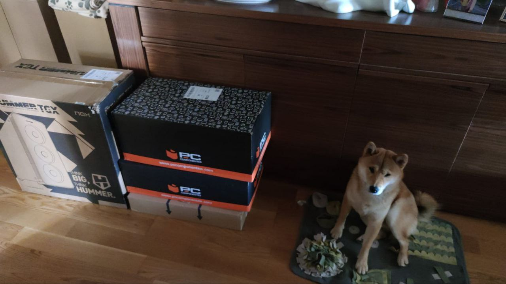
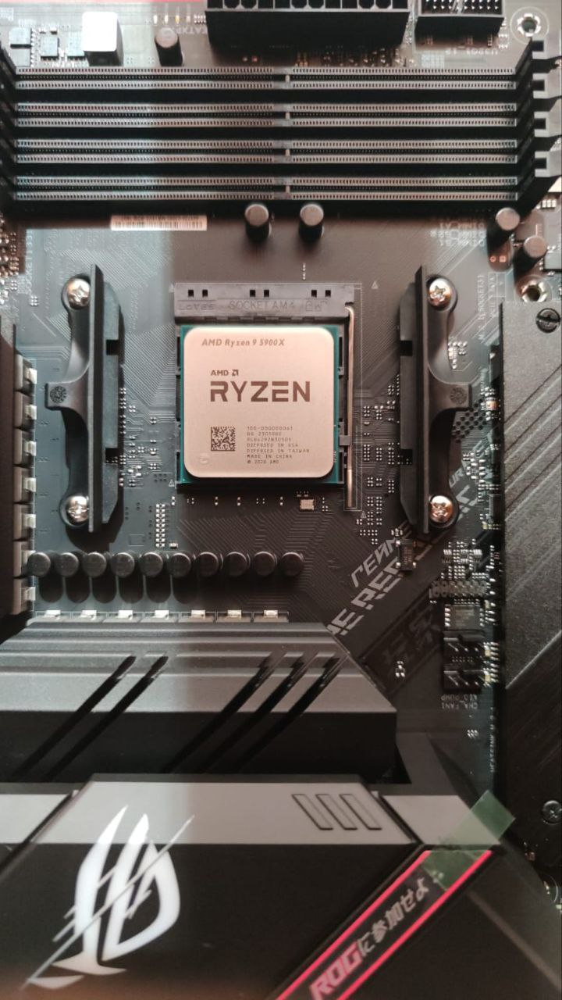
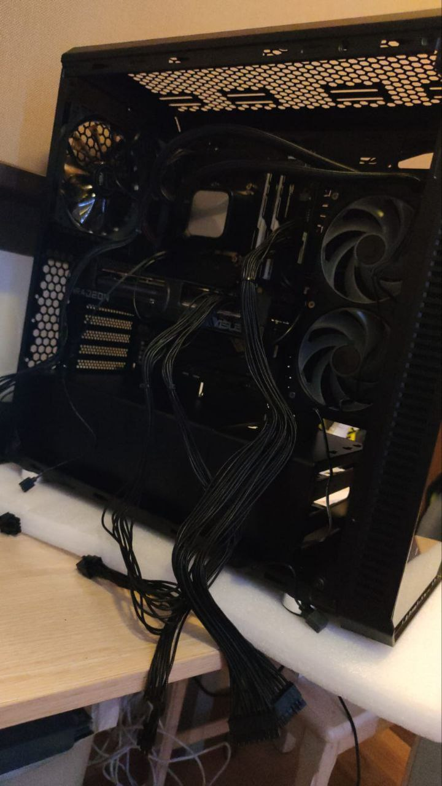
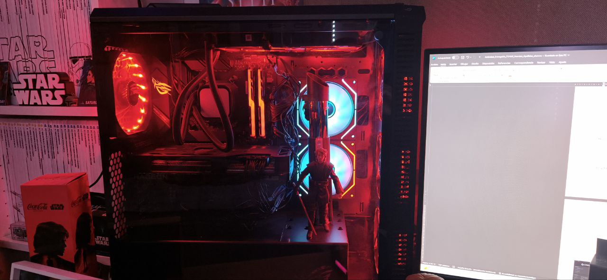
GPU-Z
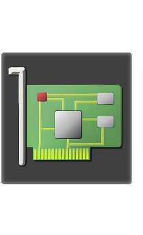
GPU-Z permite analizar en detalle la tarjeta gráfica, mostrando datos generales, sensores, temperaturas y velocidades de reloj. En este caso se utiliza para revisar el comportamiento de una AMD Radeon RX 7800 XT tanto en reposo como bajo carga.
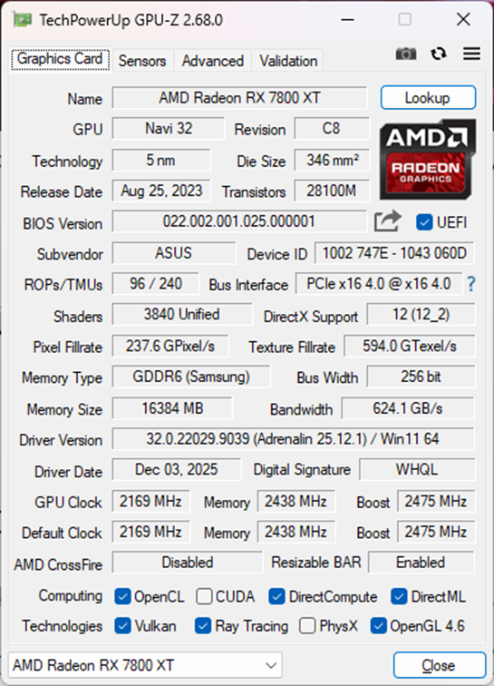
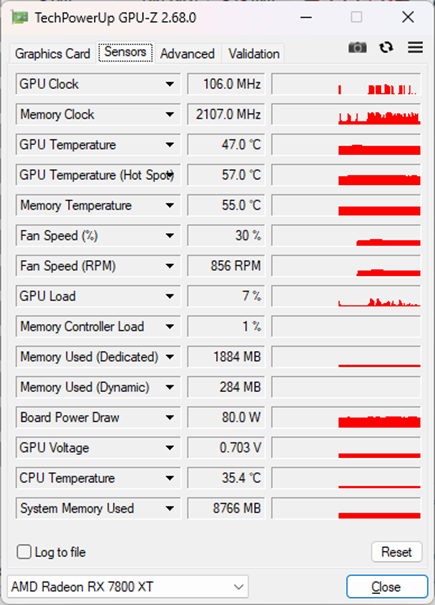
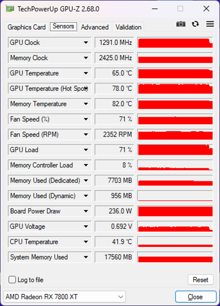
En la primera captura, se observan datos generales de la tarjeta gráfica AMD Radeon RX 7800 XT, como su fecha de lanzamiento, la interfaz Bus o la versión de drivers que posee. También especifica el tipo de memoria que tiene: GDDR6 y VRAM de 16 GB. También aparece Resizable BAR, una opción que se puede activar en la BIOS, que desencadena todo el potencial de la gráfica.
En la segunda y tercera captura, vemos los sensores. En la segunda están las temperaturas que tiene en reposo, mientras que en la tercera se aprecian las temperaturas que alcanza en una sesión gaming. Como curiosidad, cuando se estaba utilizando el ordenador durante los primeros días, la CPU en reposo alcanzaba los 80 grados. Tras reajustar los ventiladores de la refrigeración líquida y situarlos en modo extractor, se conseguió bajar esas temperaturas a la mitad.
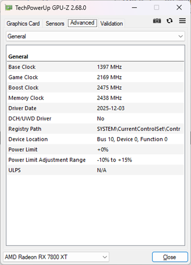
CrystalDiskInfo
CrystalDiskInfo permite comprobar el estado de salud, la temperatura y otros parámetros relevantes de las unidades de almacenamiento instaladas en el equipo.
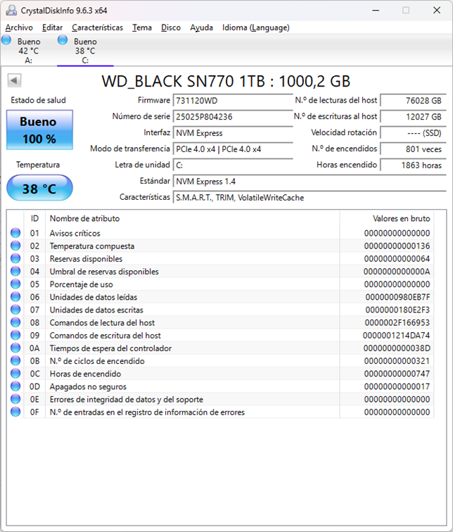
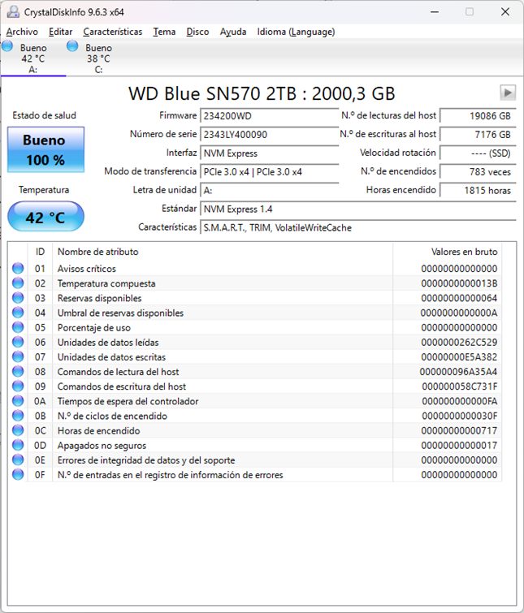
En estas dos capturas se pueden apreciar los dos discos duros instalados en el ordenador. Ambos son M.2, con 1 TB y 2 TB de capacidad respectivamente. El WD Blue se instaló días después del Black, como disco auxiliar, por eso tiene menos horas de uso. La placa base tiene dos ranuras de M.2, siendo una PCIe 4.0 y otra 3.0. El Black es superior en velocidad y está pensado para gaming, por eso está en la ranura 4.0. Tienen un buen estado de salud y temperatura, además y por suerte, no han recibido avisos críticos.